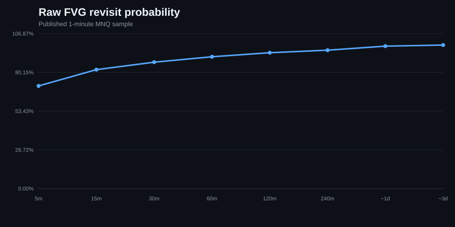
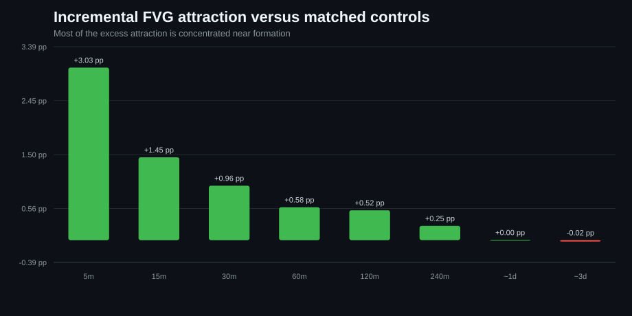
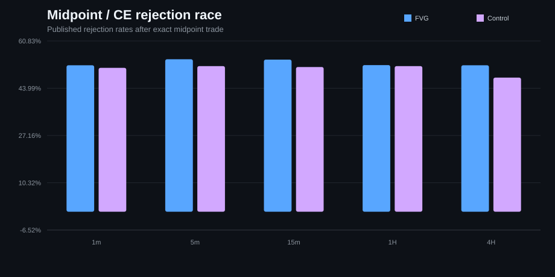
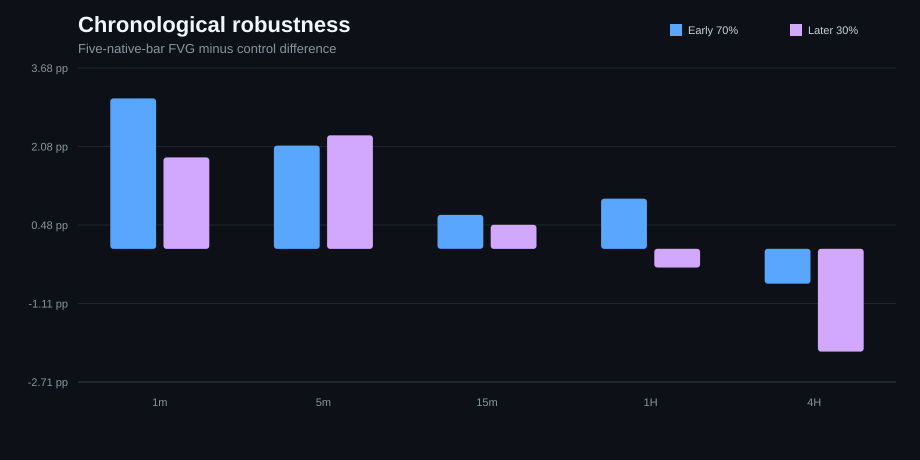

FVG Predictive Strength
A falsification-style MNQ study asking whether mechanically defined Fair Value Gaps add predictive information beyond distance, volatility, trend, session and ordinary price revisits.
Answer in one sentence
Research architecture
Four canonical computational suites feed nine reader-facing experiments. The presentation layer does not duplicate the heavy calculations.
Published figures
Raw revisit probability

Incremental matched attraction

Midpoint / CE reaction

Chronological robustness

Experiment index
Raw Fill Rates
How often do FVGs actually get revisited?
Design
- Canonical suite
- detailed-1m
- Published sample
- 454,197 detected 1m FVGs
- Controls
- None — descriptive baseline
- Seed
- Not required
Interpretation guardrail
Raw revisit probability is descriptive. Distance, volatility and ordinary price revisitation can explain much of it.
Matched-Zone Attraction
Are FVGs reached more often than comparable ordinary zones?
Design
- Canonical suite
- detailed-1m + multi-tf
- Published sample
- Deep 1m: up to 40,000 parents; multi-TF: up to 12,000/timeframe
- Controls
- Up to 5 deep-1m controls; 3 multi-TF controls
- Seed
- 42 / 260918
Interpretation guardrail
Matching reduces obvious confounding but does not establish causality.
FVG Age Decay
Does an old unfilled gap still carry information?
Design
- Canonical suite
- multi-tf
- Published sample
- Up to 12,000 FVG parents/timeframe
- Controls
- 3 matched ordinary zones per FVG where available
- Seed
- 260918
Interpretation guardrail
Published v1 control survival is survivor-zone weighted rather than perfectly parent-paired.
Formation Continuation
Does creating an FVG predict continuation in the same direction?
Design
- Canonical suite
- multi-tf
- Published sample
- Up to 8,000 FVG-forming moves/timeframe
- Controls
- One state/move-matched non-FVG displacement
- Seed
- 260918
Interpretation guardrail
Small conditional return differences may be dominated by costs, execution and regime changes.
First-Touch Retest Reaction
Does price react differently once it reaches an FVG?
Design
- Canonical suite
- multi-tf
- Published sample
- Up to 12,000 sampled FVG parents/timeframe
- Controls
- 3 matched ordinary zones per FVG where available
- Seed
- 260918
Interpretation guardrail
OHLC bars cannot reveal within-bar ordering when both race boundaries trade in the same bar.
Midpoint / Consequent Encroachment
Is the exact 50% level special?
Design
- Canonical suite
- midpoint
- Published sample
- Up to 12,000 eligible FVGs/timeframe
- Controls
- 3 state-matched zones per FVG
- Seed
- 9917
Interpretation guardrail
The strongest cell was selected from multiple searched timeframe cells and should be interpreted accordingly.
Candle-Body Acceptance Around CE
Does body-close depth inside the gap matter?
Design
- Canonical suite
- ce-body
- Published sample
- All qualifying opposite-color signal candles
- Controls
- TP/SL execution race, no matched-zone placebo
- Seed
- 20260918 bootstrap
Interpretation guardrail
Signals overlap and many timeframe/depth cells were inspected; uncertainty is therefore optimistic without multiplicity/dependence correction.
Distance, Regimes & Controlled Model
How much does the FVG label matter after obvious variables are controlled?
Design
- Canonical suite
- detailed-1m
- Published sample
- Deep 1m matched sample, up to 40,000 parents
- Controls
- Up to 5 matched ordinary zones per FVG
- Seed
- 42
Interpretation guardrail
The coefficient is conditional on the chosen feature set and is not a causal or economic edge estimate.
Chronological Robustness
Does the observed effect survive later data?
Design
- Canonical suite
- detailed-1m + multi-tf
- Published sample
- Chronologically ordered matched parent events
- Controls
- Same controls as source attraction studies
- Seed
- 42 / 260918
Interpretation guardrail
This is a chronological robustness split, not a sealed prospective pipeline holdout.
When are FVGs most predictive?
A second-stage temporal study separates FVG attraction from first-touch reaction/rejection across year, quarter, session, hour and native timeframe.
Temporal structure
The matched attraction premium was +1.56 pp in 2020, +1.35 pp in 2021, +0.44 pp in 2022, +1.18 pp in 2023, +1.28 pp in 2024, +0.44 pp in 2025 and +1.08 pp in partial 2026. The result does not support a story that FVGs suddenly started working recently.
Attraction heterogeneity was strongest by year (p≈0.0004), session (p≈0.014) and quarter (p≈0.019); rejection was much more stable. Monthly trend estimates were mildly negative for attraction (r≈−0.23) and 3-bar reaction magnitude (r≈−0.25).
By formation session, post-market, Asia and London showed larger incremental attraction than NY premarket, even though NY premarket had the highest raw touch rate.
Interpretation guardrail
Recurring weekday and calendar-month effects were weak. Historical extremes were large—e.g. +6.17 pp attraction in the week of 2024-01-08 and +14.8 pp rejection in the week of 2020-05-18—but opposite-sign weeks were also observed. These are regime diagnostics, not recurring calendar rules.
Individual day/hour/day-of-month anomalies face substantial multiple-comparison risk and remain hypothesis-generation material only.
Inspect, reproduce, stress-test, and extend
The repository is now a research platform around the frozen published study rather than only a code dump.
Reproduction workflow
Download the repository, run START_HERE.bat, inspect
the frozen evidence immediately, then optionally prepare licensed
data and run the resumable full-study reproduction. The app
compares local output with the published reference and can export
a self-contained HTML report.
Research v2
The published v1 scripts stay hash-locked. A separate v2 track implements symmetric full-horizon eligibility, contract-boundary censoring, parent-paired age decay, CME-trade-date clustered uncertainty, walk-forward controls, and FDR-corrected CE re-inference.
All v2 results are new / unpublished research until rerun and reviewed on licensed data.
Long-history Nasdaq-100 proxy track
Can the same FVG hypotheses survive a much longer, freely obtainable Nasdaq-related price history?
What v5 adds
Local audit/preparation, fixed-EST normalization, DuckDB-backed candle queries, 1m→4H FVG overlays, isolated experiment reruns, a resumable 12-stage replication and machine-readable public summaries.
Scientific boundary
NSX/USD is an index-style quote feed, not CME NQ/MNQ futures. Volume, rolls, exchange-tick execution and futures economics are out of scope. The preserved CE/body method also carries an MNQ-derived 0.25-point convention that must be read as a transferred method unit on this proxy feed.
The raw HistData-derived market file is not hosted here; “live” data inspection occurs locally after the reader prepares the free source.
Reproducibility
The research repository preserves frozen published evidence, canonical source hashes, experiment definitions, scientific limitations, a no-data quick demo, resumable full reproduction, and a separate corrected Research v2 track.
Licensed Databento market history is not redistributed.